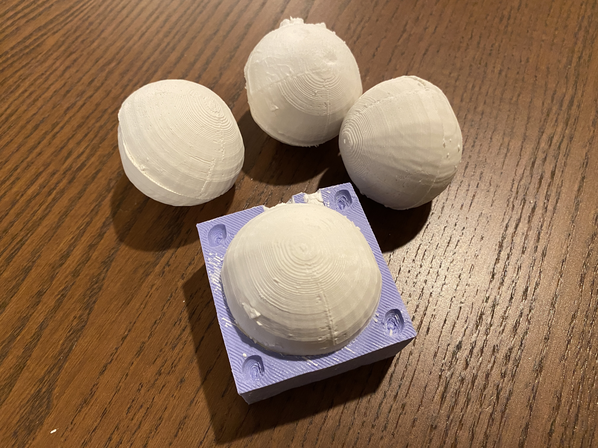

A6: Molding & Casting!
Nov. 22, 2022Designing the Meta-Mold!
Last week, I was a bit ambitious and decided to mold a vase. I attended Junchao's office hour where he was able to show me a much easier approach to create a two-sided mold. I got everything down, but realized that I was doing the complete opposite approach of the meta-mold.

I lost my last few braincells trying to figure out how to solve my problem and ultimately decided to give up on the vase. I decided to do something much easier: a sphere (I should've listened to Nadya in the first place lol - she's never wrong)
The Rhino workflow:
- Create shape (if it's a mesh, change it to a polysurface with
meshtoNURB - Use
boundingboxto cover the shape ScaleIDto cover half of the shape and thenMirror- Add smaller spheres to the corners to make the keys. Add cylinders for the pouring vent and spruce
- Use
BooleanDifferenceto take parts away. Can also useTrimto trim excess parts - Use
DupBorderandOffsetto create the walls to extrude - Once everything is created, use
BooleanUnionto join shapes together
After a couple hours of designing and iterating, I was able to 3D print them. Each mold took about 3 hrs to print (total 6 hrs).
Molding!
It's finally time to bring out the Oomoo 30 that has been sitting in my room for weeks! The instructions were pretty straightforward and easy to follow. Pour equal parts of both mixture and combine it together.
I let it cure overnight and by the next morning, it was time to release the mold! It was a bit hard to release since my box was a bit deep. However, once I separated the sides and corners, it became easier to release. I had to use the end of a metal spoon to help release the deeper parts. For a moment, I thought I was doomed and would have to reprint the mold and redo the molding process again. But sure enough, the mold popped out! It was so satisfying to see the mold and be able to feel how rubbery it was.

Casting!
It was a bit tricky when working with the hydrostone plaster since I wasn't sure what the powder to water ratio was.

After a couple of attempts, the spheres are casted and ready to be taken out!

Here is the final result with all 4 spheres!
Acknowledgement
Thank you Junchao for guiding me on a different approach on how to efficiently and effectively create the molds in Rhino!Source Files
Rhino (.3dm)Return to Main